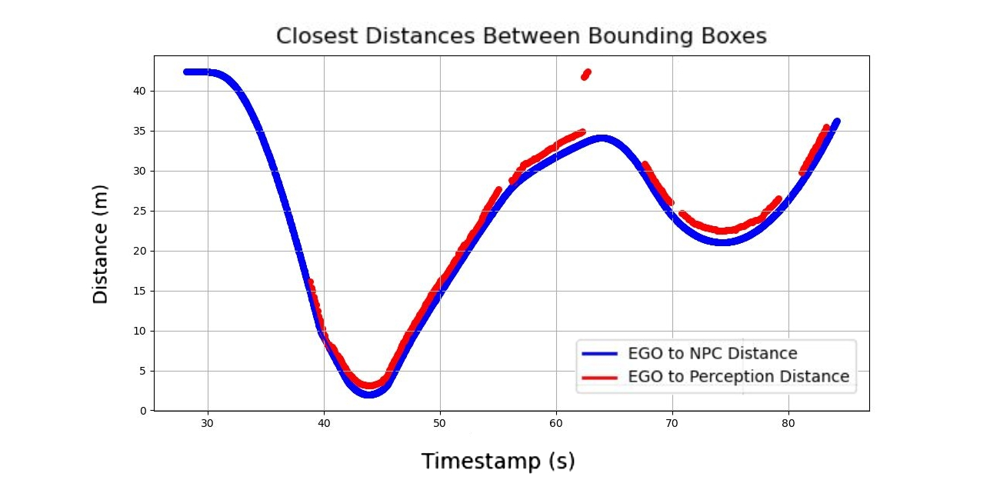
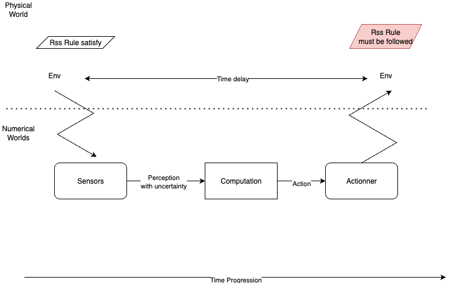
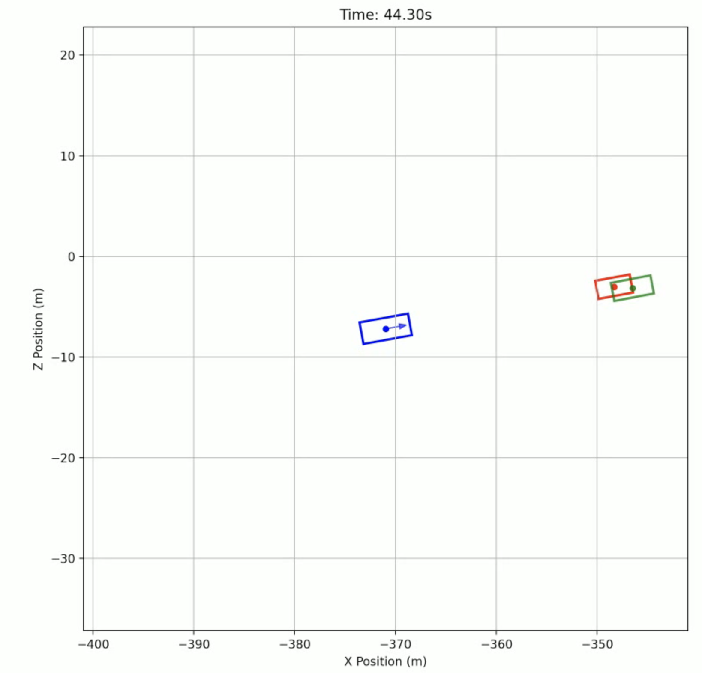
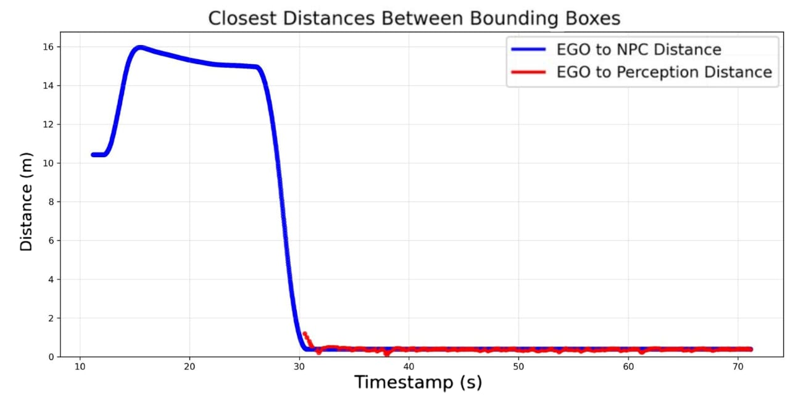

Autonomous Vehicles Rely on a Perception Pipeline
- Safety rules operate at the planning layer
- But the inputs, distances and velocities, come from imperfect perception
Real AVs perceive the world with delay and noise.
Perception Failures Have Real Consequences


The Perspective Problem

The automated driver has incomplete information, and a safety rule that assumes perfect knowledge will share that blind spot.
Perceived vs. Actual Distance: Concept and Reality

These errors can cause safety violations even when the AV follows the original RSS rules.
Our Contributions
-
Formal uncertainty modeling
Mathematical framework that models temporal lag $\delta$ and spatial noise $(\varepsilon_{\max},\,\gamma_{\max})$ with deterministic worst-case bounds -
Conservative RSS extension (PRSS)
Modified longitudinal safety constraints that preserve the rigor and interpretability of RSS while accounting for perception imperfections -
Experimental validation
Simulation study on 653 JAMA deceleration scenarios achieving perfect recall (100%) in crash detection with only a modest increase in false positives
Background: Responsibility-Sensitive Safety (RSS)
RSS defines mathematically precise rules for safe autonomous driving.
Five core rules:
- Safe longitudinal distance (forward and rear)
- Safe lateral distance
- Proper response to dangerous situations
- Right-of-way rules
- Responsibility assignment
Original RSS Longitudinal Constraint
| $u_t$ | ego velocity |
| $v_t$ | lead vehicle velocity |
| $d_t$ | inter-vehicle distance |
| $\rho$ | response time |
| $\alpha_{\max}$ | max ego acceleration |
| $\beta_{\min}$ | ego comfortable braking |
| $\beta_{\max}$ | lead max braking |
■ ego terms ■ lead/NPC terms
Real perception introduces lag and noise in both.
The Gap Between RSS and Reality
- The true inter-vehicle distance $d_t$
- The true lead vehicle speed $v_t$
- Accurate, instantaneous measurements
- A perceived distance $p_t = d_{\text{lag}(t)} + \varepsilon_t$
- A perceived speed $w_t = v_{\text{lag}(t)} + \gamma_t$
- Delayed, noisy estimates instead of ground truth
As formulated, RSS can only be evaluated in hindsight or from a third-person perspective where all values are exactly known.
To use it at the planning stage in real-time, we need to account for perception lag and noise. That is what PRSS does.
Methodology: 5-Step Workflow

- Base framework: Start from the original RSS formulation
- Identify uncertainty sources: Find which parameters are corrupted by lag and noise
- Augment the formula: Add conservative correction terms
- Estimate parameters: Use 95th percentile of observed $\alpha$, $\beta$ values from simulation
- Validate: Compare PRSS vs. RSS on the simulation dataset
What Are Perception Noise and Lag?
Sensor Noise
Perception Lag
Modeling Perception Lag
Let $\delta$ = maximum lag duration, $w_t = v_{\text{lag}(t)}$ = perceived lead velocity.
The lead vehicle could have been braking during the entire delay window.
The available gap may also have shrunk during the delay.
Modeling Sensor Noise
Beyond lag, measurements carry additive noise:
Reduce by max velocity error first, then account for worst-case braking during lag.
Final PRSS Constraint
where: ■ ego ■ lead/NPC ■ PRSS corrections
- $\textcolor{#1E8449}{v^{\text{eff}}_t} = \max\!\bigl(0,\; \textcolor{#C0392B}{w_t} - \textcolor{#1E8449}{\gamma_{\max}} - \textcolor{#C0392B}{\beta_{\max}}\cdot\textcolor{#1E8449}{\delta}\bigr)$ — conservative estimate of lead vehicle speed
- $\textcolor{#1E8449}{\Delta d} = (\textcolor{#1565C0}{u_t} - \textcolor{#C0392B}{w_t} + \textcolor{#1E8449}{\gamma_{\max}})\cdot\textcolor{#1E8449}{\delta} + \tfrac{1}{2}(\textcolor{#1565C0}{\alpha_{\max}}+\textcolor{#C0392B}{\beta_{\max}})\cdot\textcolor{#1E8449}{\delta^2}$ — worst-case gap reduction during lag
Perception Uncertainty: What the AV Actually Sees

■ ego ■ ground truth lead ■ perceived lead
The AV overestimates the available gap, the green box appears further away than the red box (reality).
- Original RSS trusts the perceived position
- PRSS corrects for this via $\varepsilon_{\max}$
Simulation Environment & Dataset
Tools: Autoware (open-source AV stack) + AWSIM-Labs (Unity-based 3D simulator)
JAMA (Japan Automobile Manufacturers Association) defines a standard set of disturbance scenarios for safety evaluation of autonomous vehicles: cut-in, cut-out, and deceleration. We focus on deceleration, where a lead vehicle suddenly brakes in front of the ego vehicle, as it directly stresses longitudinal safety.
Dataset:
- 653 simulation traces generated in Autoware + AWSIM-Labs
- 116 crash scenarios (17.8% crash rate)
Scenario Analysis
Results: Constraint Evaluation (Crash Scenarios)
Missed: constraint said safe, but it led to a crash. Caught: constraint was violated, and it did end up in a crash.
| Original | PRSS | Count | % |
|---|---|---|---|
| Missed | Missed | 0 | 0.0 |
| Missed | Caught | 10 | 1.5 |
| Caught | Missed | 0 | 0.0 |
| Caught | Caught | 106 | 16.2 |
- 10 crashes missed by original RSS are caught by PRSS
- PRSS catches all 116 crashes with zero misses
Results: Constraint Evaluation (Non-crash Scenarios)
Safe/Violate: the constraint's verdict (safe = distance sufficient, violate = distance insufficient).
| Original | PRSS | Count | % |
|---|---|---|---|
| Safe | Safe | 402 | 61.6 |
| Safe | Violate | 22 | 3.4 |
| Violate | Safe | 0 | 0.0 |
| Violate | Violate | 113 | 17.3 |
- Only 22 additional false positives (3.4%), mild conservativeness
- Whenever original RSS violates, PRSS also violates ⇒ PRSS is a strict superset
Results: Precision & Recall
| Strategy | Precision | Recall |
|---|---|---|
| Original RSS | 0.484 | 0.914 |
| PRSS (ours) | 0.462 | 1.000 |
| Both (AND) | 0.462 | 0.914 |
| Either (OR) | 0.462 | 1.000 |
- PRSS achieves perfect recall: all 116 crashes detected
- Original RSS misses 10 crashes (recall = 91.4%)
- Precision trade-off is modest and justified, as the cost of a missed crash far exceeds a false alarm
Case Study: A Crash the Original RSS Missed
Scenario: deceleration10-20-2468 at $t=30.5\,$s
- Actual distance: 0.448 m (near collision!)
- Perceived distance: 1.2 m
- Perceived NPC velocity: 0.8 m/s
| Safe dist. | Verdict | |
|---|---|---|
| Original | 1.054 m | "safe" |
| PRSS | 4.804 m | unsafe |
$1.2 > 1.054$: RSS misses the crash
$1.2 < 4.804$: PRSS correctly warns

Discussion & Limitations
Key takeaways:
- Conservative modeling eliminates all false negatives
- 3.4% additional false positives, acceptable and enables proactive safety responses
- Provides a deterministic, conservative framework that formally incorporates lag and noise, with no probabilistic assumptions required
Limitations:
- Focused on longitudinal safety in deceleration scenarios only
- Parameters estimated from a specific sensor configuration and weather conditions
- Assumes fixed bounded noise (not distributional or speed-dependent)
Conclusion & Future Work
Summary:
- Extended RSS with formal models of perception lag ($\delta$) and sensor noise ($\varepsilon_{\max},\,\gamma_{\max}$)
- Validated on 653 JAMA deceleration scenarios
- Achieved 100% recall, no crashes go undetected, only 3.4% additional false positives
Future directions:
- Lateral scenarios: extend PRSS to cut-in, cut-out, and swerve (RSS Rule 2)
- Dynamic adaptation: adjust $\delta$, $\varepsilon_{\max}$, $\gamma_{\max}$ in real-time based on sensor performance and environmental conditions
References
- S. Shalev-Shwartz, S. Shammah, and A. Shashua. On a formal model of safe and scalable self-driving cars. arXiv:1708.06374, 2017.
-
Simulation code and data:
github.com/fomaad/AW-Runtime-Verification
Thank You!
Questions?
Code & data: github.com/fomaad/AW-Runtime-Verification